Graticules are the longitude latitude lines shown on a projected map, and defining and drawing these lines is not easy to automate. The graticule package provides the tools to create and draw these lines by explicit specification by the user. This provides a good compromise between high-level automation and the flexibility to drive the low level details as needed, using base graphics in R.
Please note that this is an evolving topic, across a number of packages in R. There’s no ongoing integration of how best to do this, and some of the commentary in this vignette will be out of date quickly as individual packages do updates. I’ve recorded the exact versions used for this document at the end.
This is an area that needs much more discussion and outlining of needs and experiences.
A simple example uses data from rworldmap to build a map around the state of Victoria in Australia. Victoria uses a local Lambert Conformal Conic projection that was introduced while the shift to GDA94 was implemented, to reduce complications due to working with more than one UTM zone for the state.
library(rgdal)
library(raster)
library(rworldmap)
data(countriesLow)
llproj <- projection(countriesLow)
library(graticule)
map<- subset(countriesLow, SOVEREIGNT == "Australia")
## VicGrid
prj <- "+proj=lcc +lat_1=-36 +lat_2=-38 +lat_0=-37 +lon_0=145 +x_0=2500000 +y_0=2500000 +ellps=GRS80 +towgs84=0,0,0,0,0,0,0 +units=m +no_defs"
pmap <- spTransform(map, CRS(prj))
## specify exactly where we want meridians and parallels
lons <- seq(140, 150, length = 5)
lats <- seq(-40, -35, length = 6)
## optionally, specify the extents of the meridians and parallels
## here we push them out a little on each side
xl <- range(lons) + c(-0.4, 0.4)
yl <- range(lats) + c(-0.4, 0.4)
## build the lines with our precise locations and ranges
grat <- graticule(lons, lats, proj = prj, xlim = xl, ylim = yl)
## build the labels, here they sit exactly on the western and northern extent
## of our line ranges
labs <- graticule_labels(lons, lats, xline = min(xl), yline = max(yl), proj = prj)
## set up a map extent and plot
op <- par(mar = rep(0, 4))
plot(extent(grat) + c(4, 2) * 1e5, asp = 1, type = "n", axes = FALSE, xlab = "", ylab = "")
plot(pmap, add = TRUE)
## the lines are a SpatialLinesDataFrame
plot(grat, add = TRUE, lty = 5, col = rgb(0, 0, 0, 0.8))
## the labels are a SpatialPointsDataFrame, and islon tells us which kind
text(subset(labs, labs$islon), lab = parse(text = labs$lab[labs$islon]), pos = 3)
text(subset(labs, !labs$islon), lab = parse(text = labs$lab[!labs$islon]), pos = 2)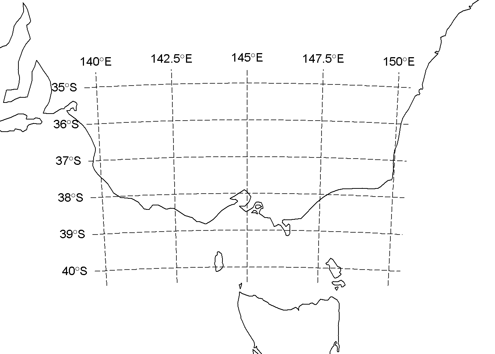
Download some sea ice concentration data and plot with a graticule. These passive microwave data are defined on a Polar Stereographic grid on the Hughes ellipsoid (predating WGS84), and there are daily files available since 1978. This is not the prettiest map, but the example is showing how we have control over exactly where the lines are created. We can build the lines anywhere, not necessarily at regular intervals or rounded numbers, and we can over or under extend the parallels relative to the meridians and vice versa.
library(raster)
library(graticule)
library(rgdal)
tfile <- system.file("extdata", "nt_20140320_f17_v01_s.bin", package = "graticule")
ice <- raster(tfile)
meridians <- seq(-180, 160, by = 20)
parallels <- c(-80, -73.77, -68, -55, -45)
mlim <- c(-180, 180)
plim <- c(-88, -50)
grat <- graticule(lons = meridians, lats = parallels, xlim = mlim, ylim = plim, proj = projection(ice))
labs <- graticule_labels(meridians, parallels, xline = -45, yline = -60, proj = projection(ice))
plot(ice, axes = FALSE)
plot(grat, add = TRUE, lty = 3)
text(labs, lab = parse(text= labs$lab), col= c("firebrick", "darkblue")[labs$islon + 1], cex = 0.85)
title(sprintf("Sea ice concentration %s", gsub(".bin", "", basename(tfile))), cex.main = 0.8)
title(sub = projection(ice), cex.sub = 0.6)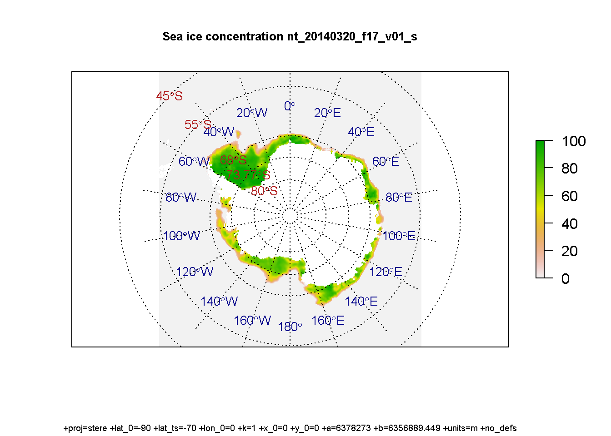
Continuing from the sea ice example, build the graticule grid as actual polygons. Necessarily the xlim/ylim option is ignored since we have not specified sensibly closed polygonal rings where there are under or over laps.
polargrid <- graticule(lons = c(meridians, 180), lats = parallels, proj = projection(ice), tiles = TRUE)
centroids <- project(coordinates(polargrid), projection(ice), inv = TRUE)
labs <- graticule_labels(meridians, parallels, proj = projection(ice))
#> returning a SpatialPointsDataFrame but a future release will be sf
#labs <- graticule_labels(as.integer(centroids[,1]), as.integer(centroids[,2]), proj = projection(ice))
#labs <- labs[!duplicated(as.data.frame(labs)), ] ## this needs a fix
cols <- sample(colors(), nrow(polargrid))
op <- par(mar = rep(0, 4))
plot(polargrid, col = cols, bg = "black")
text(labs[labs$islon, ], lab = parse(text = labs$lab[labs$islon]), col = "white", cex = 0.9, pos = 3)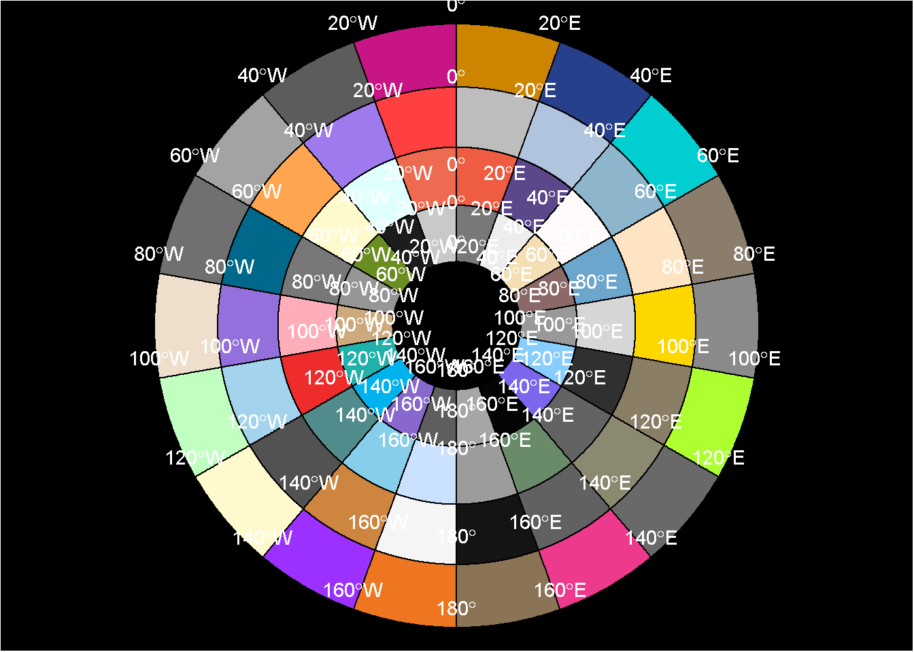
The rgdal function llgridlines() will draw a graticule on a map but had a few limitations prior to May 2016 (some of this story is now out of date and has been improved).
Many of these limitations can be worked around, especially by leveraging tools in the raster package but it’s not particularly elegant. Interestingly mapGrid in oce seems to share some of the same limitations, but I need to explore that more before being sure about the details.
Above we defined longitude and latitude ranges for an area of interest in Australia. We can plot the projected map and put on a llgridlines graticule. (Note that there’s a fair region around the main land mass of Australia here, due to Heard Island, Macquarie Island and Lord Howe Island driving the bounds of this map.)
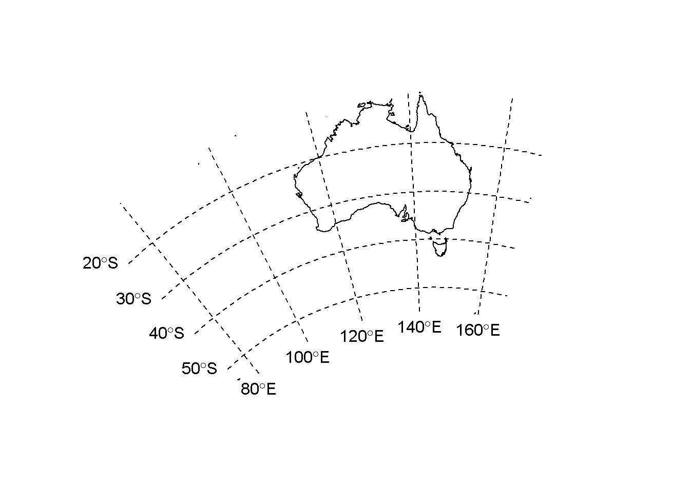
We cannot easily modify the lines to be only in our local area, since llgridlines overrides our inputs with the bounding box of the overall object.
plot(pmap)
lons <- seq(140, 150, length = 5)
lats <- seq(-40, -35, length = 6)
llgridlines(pmap, easts = lons, norths = lats)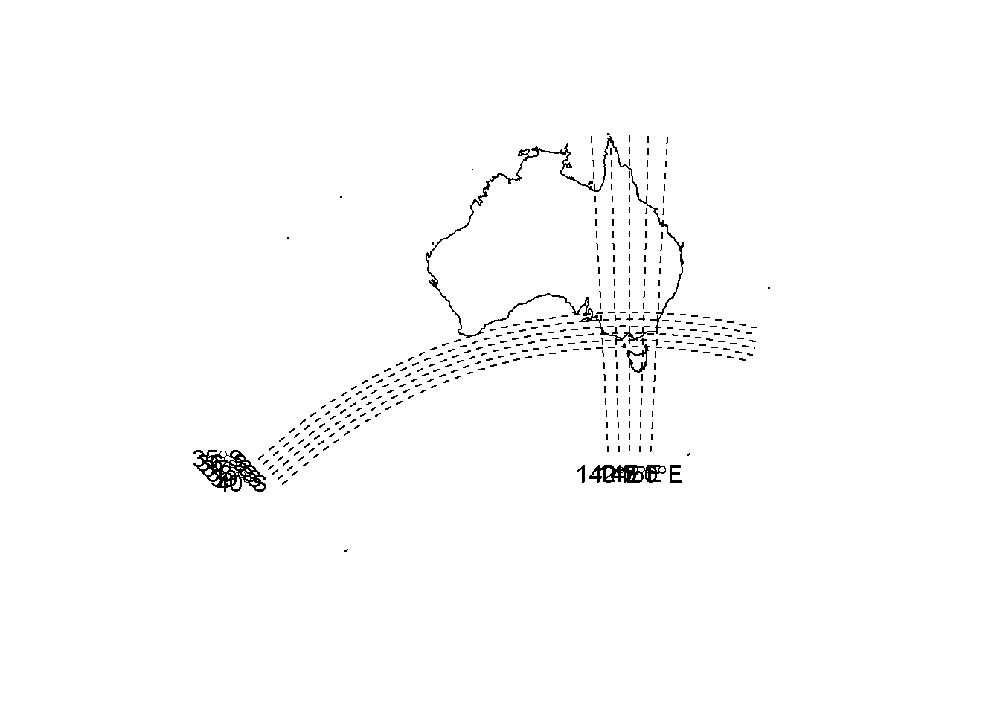
What we can do is crop the object, or create a new one with the overall extents of our region of interest. This is much closer to what I want but still I need to fiddle to get it just right.
op <- par(xpd = NA)
ex <- as(extent(range(lons), range(lats)), "SpatialPolygons")
projection(ex) <- llproj
pex <- spTransform(ex, CRS(projection(pmap)))
plot(extent(pex), type = "n", axes = FALSE, xlab = "", ylab = "", asp = 1)
plot(pmap, add = TRUE)
llgridlines(pex, easts = lons, norths = lats)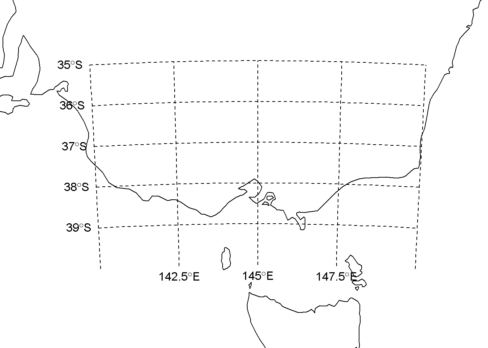
How about the polar example? This is not bad, but the default number of vertices is not sufficient and we don’t get a sensible set of meridians.
plot(ice, axes = FALSE)
##llgridlines(ice) does not understand a raster
llgridlines(as(ice, "SpatialPoints"))Try again, we increase the verticular density, but still I can’t get a line at -180/180 and 80S.
plot(ice, axes = FALSE)
llgridlines(as(ice, "SpatialPoints"), easts = c(-180, -120, -60, 0, 60, 120), norths = c(-80, -70, -60, -50), ndiscr = 50)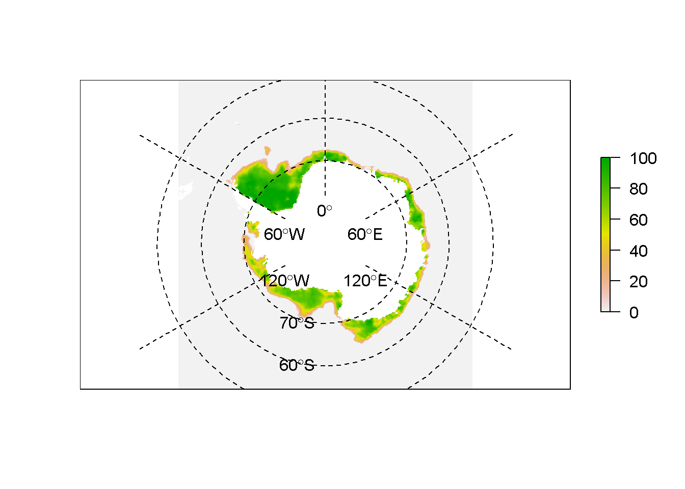
(This is pretty good, needs more exploration.)
library(sf)
#> Linking to GEOS 3.7.0, GDAL 2.4.0, PROJ 5.2.0
sf_map <- st_as_sf(pmap)
g <- st_graticule(sf_map)
plot(st_geometry(sf_map))
op <- par(xpd = NA)
plot(st_geometry(g), add = TRUE)
invisible(lapply(seq_len(nrow(g)), function(i) {
if (g$type[i] == "N" && g$x_start[i] - min(g$x_start) < 1000)
text(g[i,"x_start"], g[i,"y_start"], labels = parse(text = g[i,"degree_label"]),
srt = g$angle_start[i], pos = 2, cex = .7)
if (g$type[i] == "E" && g$y_start[i] - min(g$y_start) < 1000)
text(g[i,"x_start"], g[i,"y_start"], labels = parse(text = g[i,"degree_label"]),
srt = g$angle_start[i] - 90, pos = 1, cex = .7)
if (g$type[i] == "N" && g$x_end[i] - max(g$x_end) > -1000)
text(g[i,"x_end"], g[i,"y_end"], labels = parse(text = g[i,"degree_label"]),
srt = g$angle_end[i], pos = 4, cex = .7)
if (g$type[i] == "E" && g$y_end[i] - max(g$y_end) > -1000)
text(g[i,"x_end"], g[i,"y_end"], labels = parse(text = g[i,"degree_label"]),
srt = g$angle_end[i] - 90, pos = 3, cex = .7)
}))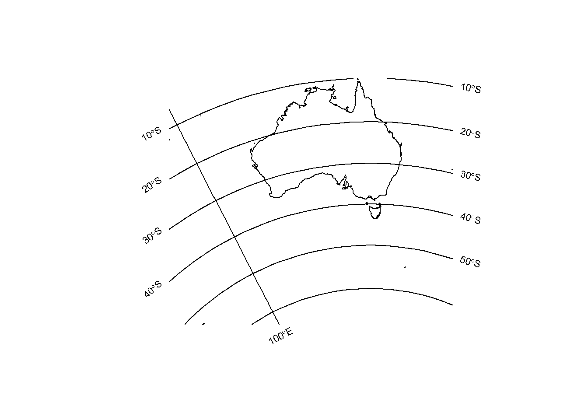
library(spex)
#>
#> Attaching package: 'spex'
#> The following object is masked _by_ '.GlobalEnv':
#>
#> ice
pex <- spex(ice)
plot(ice, axes = FALSE)
g <- st_graticule(st_as_sf(pex))
plot(st_geometry(g), add = TRUE)
op <- par(xpd = NA)
invisible(lapply(seq_len(nrow(g)), function(i) {
if (g$type[i] == "N" && g$x_start[i] - min(g$x_start) < 1000)
text(g[i,"x_start"], g[i,"y_start"], labels = parse(text = g[i,"degree_label"]),
srt = g$angle_start[i], pos = 2, cex = .7)
if (g$type[i] == "E" && g$y_start[i] - min(g$y_start) < 1000)
text(g[i,"x_start"], g[i,"y_start"], labels = parse(text = g[i,"degree_label"]),
srt = g$angle_start[i] - 90, pos = 1, cex = .7)
if (g$type[i] == "N" && g$x_end[i] - max(g$x_end) > -1000)
text(g[i,"x_end"], g[i,"y_end"], labels = parse(text = g[i,"degree_label"]),
srt = g$angle_end[i], pos = 4, cex = .7)
if (g$type[i] == "E" && g$y_end[i] - max(g$y_end) > -1000)
text(g[i,"x_end"], g[i,"y_end"], labels = parse(text = g[i,"degree_label"]),
srt = g$angle_end[i] - 90, pos = 3, cex = .7)
}))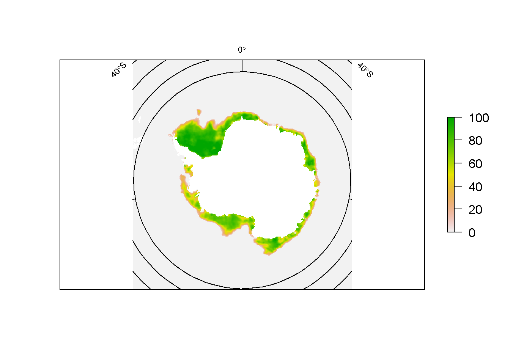
The oce package has a lot of really neat map projection tools, but it works rather differently from the Spatial and raster tools in R. We need to drive the creation of the plot from the start with mapPlot, as it sets up the projection metadata for the current plot and handles that for subsequent plotting additions. (My use of oce is inexpert, I’m not across much of the details yet so I may well be off-track with some things here).
Here is our map of Victoria.
library(oce)
## we need to hop the crevasse into another world
pp <- raster::geom(map, sepNA = TRUE)
mapPlot(pp[,"x"], pp[,"y"], projection = projection(pmap), longitudelim = xl, latitudelim = yl, type = "p", grid = FALSE)
mapGrid(longitude = lons, latitude = lats)
## and to prove that all is well in the world
plot(pmap, add = TRUE, col = "grey")
mapGrid(longitude = lons, latitude = lats)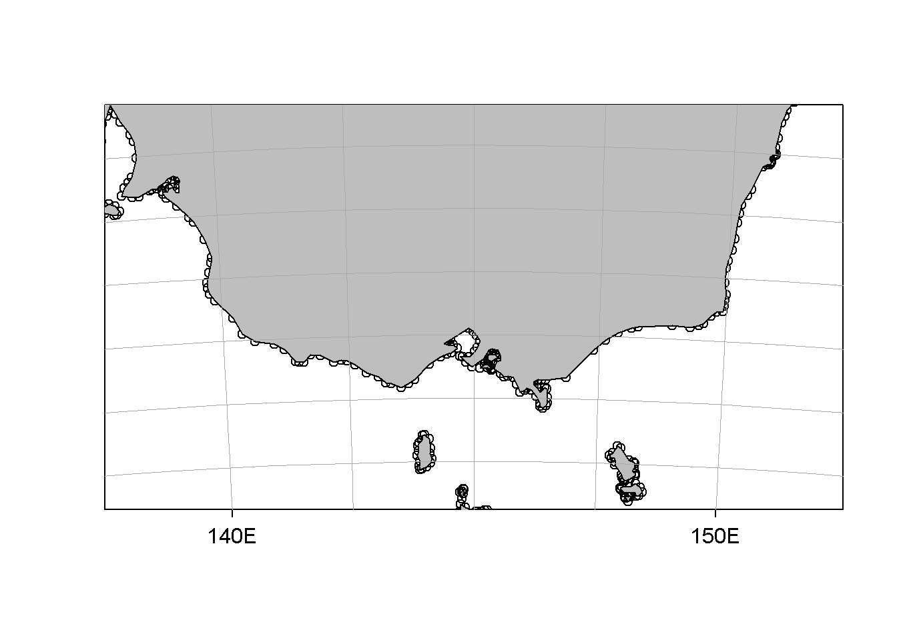
Here is our polar map, this is good I haven’t explore oce enough yet to do it justice. For bonus points we add mapTissot(), which should be in the basic toolkit of all intrepid R mappers.
ipts <- coordinates(spTransform(xyFromCell(ice, sample(ncell(ice), 1000), spatial = TRUE), CRS(llproj)))
mapPlot(ipts[,1], ipts[,2], projection = projection(ice), type = "n", grid = FALSE)
plot(ice, add = TRUE)
mapGrid(10, 15)
mapTissot()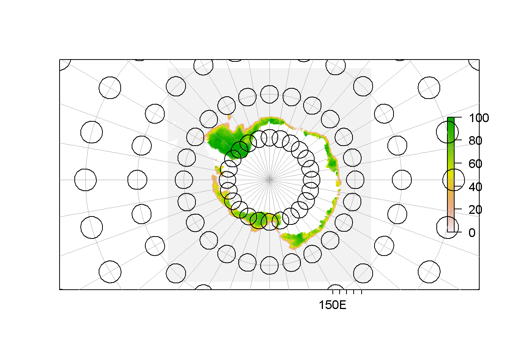
Also see here for another implementation of the Tissot Indicatrix in R by user whuber on GIS StackExchange. This is available in the dev package tissot.
Efforts could be shared with the sp and rgdal projects to improve the functionality for the llgridlines and its worker functions gridlines and gridat in that central place, and I agree with this. But I have an interest in working with graticules more directly as objects, and potentially stored in relational-table approach built on dplyr, and so I just found it simpler to start from scratch in this package. Also, there is a lot of this functionality spread around the place in sp, raster, maptools, fields, oce and many others. It is time for a new review, analogous to the effort that built sp in ca. 2002.
I tend to use the same terminology as used within Manifold System because it’s so awesome and that’s where I first learnt about most of these concepts. In my experience not many people use the term graticule in this way, so take it from the master himself on page 8 (Snyder, 1987):
To identify the location of points on the Earth, a graticule or network of longitude and latitude lines has been superimposed on the surface. They are commonly referred to as meridians and parallels, respectively.
“Verticular density” is kind of a joke, but I like it. YMMV
devtools::session_info()
#> ─ Session info ──────────────────────────────────────────────────────────
#> setting value
#> version R version 3.6.0 (2019-04-26)
#> os Ubuntu 18.04.2 LTS
#> system x86_64, linux-gnu
#> ui X11
#> language (EN)
#> collate en_AU.UTF-8
#> ctype en_AU.UTF-8
#> tz Etc/UTC
#> date 2019-06-15
#>
#> ─ Packages ──────────────────────────────────────────────────────────────
#> package * version date lib source
#> abind 1.4-5 2016-07-21 [2] CRAN (R 3.6.0)
#> assertthat 0.2.1 2019-03-21 [2] CRAN (R 3.6.0)
#> backports 1.1.4 2019-04-10 [2] CRAN (R 3.6.0)
#> callr 3.2.0 2019-03-15 [2] CRAN (R 3.6.0)
#> class 7.3-15 2019-01-01 [4] CRAN (R 3.6.0)
#> classInt 0.3-3 2019-04-26 [2] CRAN (R 3.6.0)
#> cli 1.1.0 2019-03-19 [2] CRAN (R 3.6.0)
#> codetools 0.2-16 2018-12-24 [4] CRAN (R 3.6.0)
#> colorspace 1.4-1 2019-03-18 [2] CRAN (R 3.6.0)
#> commonmark 1.7 2018-12-01 [2] CRAN (R 3.6.0)
#> crayon 1.3.4 2017-09-16 [2] CRAN (R 3.6.0)
#> DBI 1.0.0 2018-05-02 [2] CRAN (R 3.6.0)
#> desc 1.2.0 2018-05-01 [2] CRAN (R 3.6.0)
#> devtools 2.0.2 2019-04-08 [2] CRAN (R 3.6.0)
#> digest 0.6.19 2019-05-20 [2] CRAN (R 3.6.0)
#> dotCall64 1.0-0 2018-07-30 [2] CRAN (R 3.6.0)
#> e1071 1.7-2 2019-06-05 [2] CRAN (R 3.6.0)
#> evaluate 0.14 2019-05-28 [2] CRAN (R 3.6.0)
#> fields 9.8-3 2019-05-28 [2] CRAN (R 3.6.0)
#> foreign 0.8-71 2018-07-20 [4] CRAN (R 3.6.0)
#> fs 1.3.1 2019-05-06 [2] CRAN (R 3.6.0)
#> geometry 0.4.1 2019-03-27 [2] CRAN (R 3.6.0)
#> geosphere 1.5-10 2019-05-26 [2] CRAN (R 3.6.0)
#> glue 1.3.1 2019-03-12 [2] CRAN (R 3.6.0)
#> graticule * 0.1.5.9001 2019-06-15 [1] local
#> gsw * 1.0-5 2017-08-09 [2] CRAN (R 3.6.0)
#> htmltools 0.3.6 2017-04-28 [2] CRAN (R 3.6.0)
#> KernSmooth 2.23-15 2015-06-29 [4] CRAN (R 3.6.0)
#> knitr 1.23 2019-05-18 [2] CRAN (R 3.6.0)
#> lattice 0.20-38 2018-11-04 [4] CRAN (R 3.6.0)
#> magic 1.5-9 2018-09-17 [2] CRAN (R 3.6.0)
#> magrittr 1.5 2014-11-22 [2] CRAN (R 3.6.0)
#> maps 3.3.0 2018-04-03 [2] CRAN (R 3.6.0)
#> maptools 0.9-5 2019-02-18 [2] CRAN (R 3.6.0)
#> MASS 7.3-51.4 2019-04-26 [2] CRAN (R 3.6.0)
#> memoise 1.1.0 2017-04-21 [2] CRAN (R 3.6.0)
#> munsell 0.5.0 2018-06-12 [2] CRAN (R 3.6.0)
#> oce * 1.0-1 2018-10-04 [2] CRAN (R 3.6.0)
#> pkgbuild 1.0.3 2019-03-20 [2] CRAN (R 3.6.0)
#> pkgdown 1.3.0 2018-12-07 [2] CRAN (R 3.6.0)
#> pkgload 1.0.2 2018-10-29 [2] CRAN (R 3.6.0)
#> png 0.1-7 2013-12-03 [2] CRAN (R 3.6.0)
#> prettyunits 1.0.2 2015-07-13 [2] CRAN (R 3.6.0)
#> processx 3.3.1 2019-05-08 [2] CRAN (R 3.6.0)
#> proj4 1.0-8 2012-08-05 [2] CRAN (R 3.6.0)
#> ps 1.3.0 2018-12-21 [2] CRAN (R 3.6.0)
#> purrr 0.3.2 2019-03-15 [2] CRAN (R 3.6.0)
#> quadmesh 0.4.0.9003 2019-06-04 [1] local
#> R6 2.4.0 2019-02-14 [2] CRAN (R 3.6.0)
#> raster * 2.9-10 2019-06-09 [1] Github (rspatial/raster@14f9766)
#> Rcpp 1.0.1 2019-03-17 [2] CRAN (R 3.6.0)
#> remotes 2.0.4 2019-04-10 [2] CRAN (R 3.6.0)
#> reproj 0.4.0 2019-06-02 [1] Github (hypertidy/reproj@1458923)
#> rgdal * 1.4-4 2019-05-29 [2] CRAN (R 3.6.0)
#> rlang 0.3.4.9003 2019-05-02 [2] Github (r-lib/rlang@6a232c0)
#> rmarkdown 1.13 2019-05-22 [2] CRAN (R 3.6.0)
#> roxygen2 6.1.1 2018-11-07 [2] CRAN (R 3.6.0)
#> rprojroot 1.3-2 2018-01-03 [2] CRAN (R 3.6.0)
#> rstudioapi 0.10 2019-03-19 [2] CRAN (R 3.6.0)
#> rworldmap * 1.3-6 2016-02-03 [2] CRAN (R 3.6.0)
#> scales 1.0.0 2018-08-09 [2] CRAN (R 3.6.0)
#> sessioninfo 1.1.1 2018-11-05 [2] CRAN (R 3.6.0)
#> sf * 0.7-4 2019-04-25 [2] CRAN (R 3.6.0)
#> sp * 1.3-1 2018-06-05 [2] CRAN (R 3.6.0)
#> spam 2.2-2 2019-03-08 [2] CRAN (R 3.6.0)
#> spex * 0.6.0 2019-06-02 [1] Github (mdsumner/spex@bc5b087)
#> stringi 1.4.3 2019-03-12 [2] CRAN (R 3.6.0)
#> stringr 1.4.0 2019-02-10 [2] CRAN (R 3.6.0)
#> testthat * 2.1.1 2019-04-23 [2] CRAN (R 3.6.0)
#> units 0.6-3 2019-05-03 [2] CRAN (R 3.6.0)
#> usethis 1.5.0.9000 2019-06-07 [2] Github (r-lib/usethis@2baa06f)
#> withr 2.1.2 2018-03-15 [2] CRAN (R 3.6.0)
#> xfun 0.7 2019-05-14 [2] CRAN (R 3.6.0)
#> xml2 1.2.0 2018-01-24 [2] CRAN (R 3.6.0)
#> yaml 2.2.0 2018-07-25 [2] CRAN (R 3.6.0)
#>
#> [1] /perm_storage/home/mdsumner/R/x86_64-pc-linux-gnu-library/3.6
#> [2] /usr/local/lib/R/site-library
#> [3] /usr/lib/R/site-library
#> [4] /usr/lib/R/library